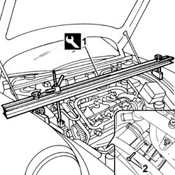
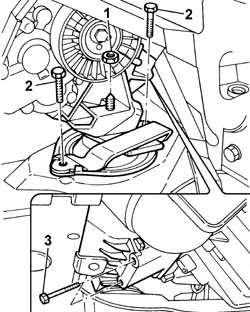
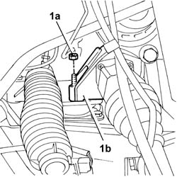
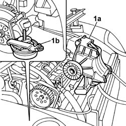

1008A46 Power unit RIGID MOUNT - TIMING side - R&R
- Path
- Procedures > 10 ENGINE > 1008 POWER UNIT SUPPORTS > 1008A power unit fastenings > 1008A46 Power unit RIGID MOUNT - TIMING side - R&R
- Kind
- repair procedure (removal / refitting; the operation number is the code)
- Applies to
- engines: 2.4 JTD 20V; all production periods
- Interactive page
- https://sloeber94.github.io/elrnDB-lThss/en/#/849860
Applies to: engines: 2.4 JTD 20V; all production periods
 Removing
Removing
 Refitting
RefittingSee in Op. 7055B54 PROTECTION/GUARD under engine - R.R.
See in Op. 0010T84 AIR CONDITIONING system COOLANT - Dry and repressurize
See in Op. 4450B04 Right FRONT WHEEL (one) - R.R.
See in Op. 7055B42 FRONT WHEEL ARCH LINER (one), left or right - R.R.
See in Op. 7055B64 Engine compartment DUST SEAL in front wheel arch (one), left or right - R.R.
See in Op. 1016A10 SOUND-PROOFING COVER - R.R.
See in Op. 7040D50 ENGINE COMPARTMENT UPPER SOUND INSULATION SHIELD - R.R.
See in Op. 1048B44 RIGID air supply PIPE from heat exchanger to intake manifold - R.R.
See in Op. 1048A56 UPPER RESONATOR - R.R.
See in Op. 1092G10 Engine components single drive BELT - R.R.
See in Op. 1048A21 AIR INLET HOSE FROM INTAKE TO FILTER - R.R.
1. Position the engine mounting beam and anchor by means of a fixed eye on the timing side.
 | Description | Code | Function |
|---|---|---|---|
1 | Crossmember | 1.870.595.000 | Power unit support |
2. Undo the upper bolts securing the power unit/compressor rigid support.

Applies to: engines: 2.4 JTD 20V; all production periods
- Raise the lift.
1. Undo the nut securing the flexible block to the rigid power unit mounting
2. Undo the bolts fixing the timing side flexible engine mounting to the chassis.
3. Undo the lower bolts for the rigid power unit mount to the engine block.

Applies to: engines: 2.4 JTD 20V; all production periods
- Position a hydraulic lift.
1. Undo the nut (1a) securing the power unit rigid rear mount (1b).

Applies to: engines: 2.4 JTD 20V; all production periods
1. Raise the power unit on the timing side and remove the power unit rigid mount (1a), also remove flexible block (1b).

Applies to: engines: 2.4 JTD 20V; all production periods
Refitting
Removing- Fit the flexible block in position and tighten the bolts.
- Tighten the lower bolts securing the engine/compressor support to the cylinder block/crankcase to the recommended torque.
 | Value - daNm | Fastening | Component | Ø |
|---|---|---|---|---|
. | (cylinder block/crankcase side) 7 | Nuts | RIGID ENGINE MOUNT, TIMING SIDE | M10X1.25 |
- Tighten the bolts fixing the flexible mounting to the chassis to torque.
| Value - daNm | Fastening | Component | Ø |
|---|---|---|---|---|
. | 5.8 | Bolt | FRONT FLEXIBLE MOUNTING BLOCKS, POWER UNIT | M10 X 1.25 |
- Tighten the nut fixing the support to the flexible mounting to the engine support to torque.
| Value - daNm | Fastening | Component | Ø |
|---|---|---|---|---|
. | 4,5 | Nut | POWER UNIT RIGID TIMING MOUNT | M10 X 1.25 |
- Tighten the nut fixing the engine support/intermediate shaft to the flexible mounting to torque.
| Value - daNm | Fastening | Component | Ø |
|---|---|---|---|---|
. | 4,5 | Nut | POWER UNIT REAR RIGID MOUNT | M10 X 1.25 |
- Lower the lift.
- Tighten the upper bolts securing the engine/compressor support to the cylinder block/crankcase to the recommended torque.
| Value - daNm | Fastening | Component | Ø |
|---|---|---|---|---|
. | (cylinder block/crankcase side) 7 | Nuts | RIGID ENGINE MOUNT, TIMING SIDE | M10X1.25 |
- Remove the engine support beam.
| Description | Code | Function |
|---|---|---|---|
. | Crossmember | 1.870.595.000 | Power unit support |
See in Op. 1048A21 AIR INLET HOSE FROM INTAKE TO FILTER - R.R.
See in Op. 1092G10 Engine components single drive BELT - R.R.
See in Op. 1048A56 UPPER RESONATOR - R.R.
See in Op. 1048B44 RIGID air supply PIPE from heat exchanger to intake manifold - R.R.
See in Op. 7040D50 ENGINE COMPARTMENT UPPER SOUND INSULATION SHIELD - R.R.
See in Op. 1016A10 SOUND-PROOFING COVER - R.R.
See in Op. 7055B64 Engine compartment DUST SEAL in front wheel arch (one), left or right - R.R.
See in Op. 7055B42 FRONT WHEEL ARCH LINER (one), left or right - R.R.
See in Op. 4450B04 Right FRONT WHEEL (one) - R.R.
See in Op. 0010T84 AIR CONDITIONING system COOLANT - Dry and repressurize
Topics linked from this page (12)
- 0010T84 AIR CONDITIONING system COOLANT - Dry and repressurize
- 1016A10 SOUND-PROOFING COVER - R.R.
- 1048A21 AIR INLET HOSE FROM INTAKE TO FILTER - R.R.
- 1048A56 UPPER RESONATOR - R.R.
- 1048B44 RIGID air supply PIPE from heat exchanger to intake manifold - R.R.
- 1092G10 Engine components single drive BELT - R.R.
- 4450B04 Right FRONT WHEEL (one) - R.R.
- 5040A20 Air conditioning COMPRESSOR - R.R. - Includes fluid level check and top up if necessary
- 7040D50 ENGINE COMPARTMENT UPPER SOUND INSULATION SHIELD - R.R.
- 7055B42 FRONT WHEEL ARCH LINER (one), left or right - R.R.
- 7055B54 PROTECTION/GUARD under engine - R.R.
- 7055B64 Engine compartment DUST SEAL in front wheel arch (one), left or right - R.R.